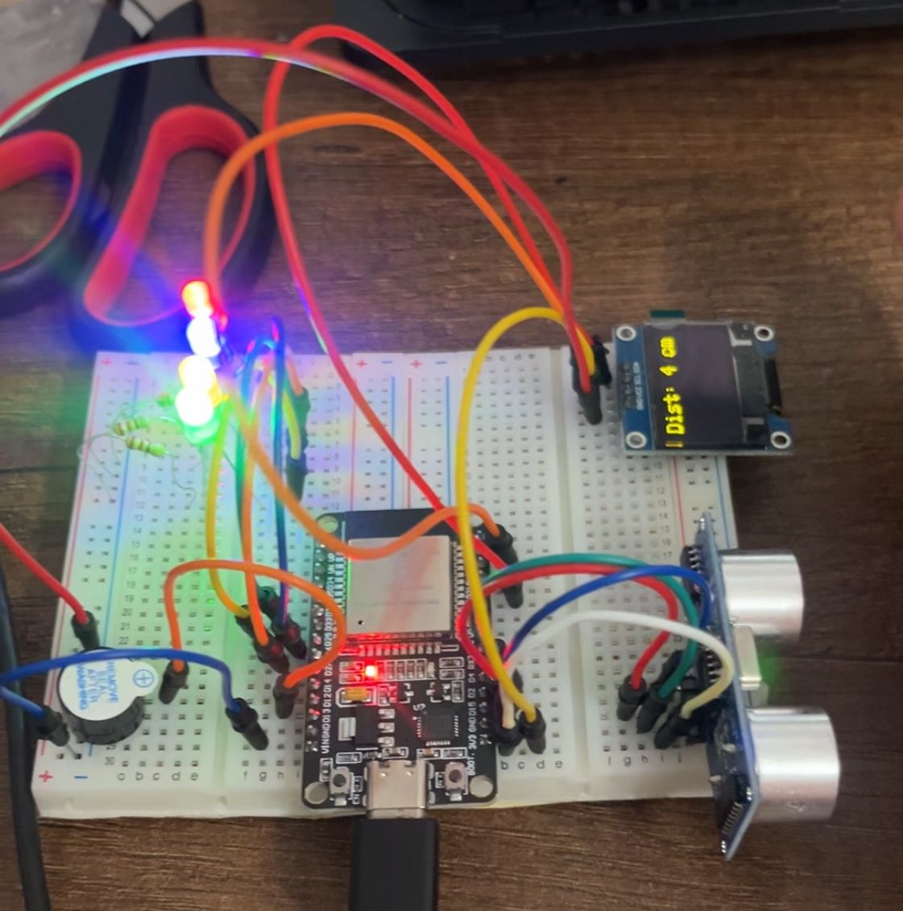

COMO USAR UN SENSOR ULTRASONICO
Para este miniproyecto incorporaremos lo que hemos aprendido con sensores, buzzer y pantalla Oled en este caso haremos que, si la distancia es menor a lo que decidamos colocar en nuestro código los leds se prenderán y el buzzer sonará, además la pantalla Oled indica la distancia.
MATERIALES
-LEDS
-Protoboard
-Buzzer activo
-Oled
-Jumpers
-ESP32
RECURSOS
-Usaremos arduino IDE
CONEXIONES
Usaremos github y sus librerías para usar el telegram bot. Aquí te dejo el link:
RESULTADO

CÓDIGO
#include
#include
#include
#include
#define echoPin 2
#define trigPin 4
#define OLED_ADDR
Adafruit_SSD1306 display(128, 64, &Wire, -1);
int buzzPin = 12;
int buzzDeLay=100;
long duration, distance;
void setup(){
Serial.begin (9600);
pinMode(buzzPin, OUTPUT);
pinMode(trigPin, OUTPUT);
pinMode(echoPin, INPUT);
pinMode(32, OUTPUT);
pinMode(33, OUTPUT);
pinMode(25, OUTPUT);
pinMode(26, OUTPUT);
display.begin(SSD1306_SWITCHCAPVCC, OLED_ADDR);
display.clearDisplay();
display.setTextColor(WHITE);
display.setTextSize(2);
display.setCursor(20, 20);
display.display();
}
void loop(){
digitalWrite(trigPin, LOW);
delayMicroseconds(2);
digitalWrite(trigPin, HIGH);
delayMicroseconds(10);
digitalWrite(trigPin, LOW);
duration = pulseIn(echoPin, HIGH);
distance = duration / 58.2;
String disp = String(distance);
if (distance<10){
digitalWrite(32, HIGH);
digitalWrite(33, HIGH);
digitalWrite(25, HIGH);
digitalWrite(26, HIGH);
digitalWrite(buzzPin, HIGH);
}
else{
digitalWrite(32, LOW);
digitalWrite(33, LOW);
digitalWrite(25, LOW);
digitalWrite(26, LOW);
digitalWrite(buzzPin, LOW);
}
display.clearDisplay();
display.setTextColor(WHITE);
display.setTextSize(2);
display.setCursor(0, 0);
display.print("Dist: ");
display.print(disp);
display.println(" cm");
display.display();
Serial.print("Distance: ");
Serial.print(disp);
Serial.println(" cm");
delay(1000);
}